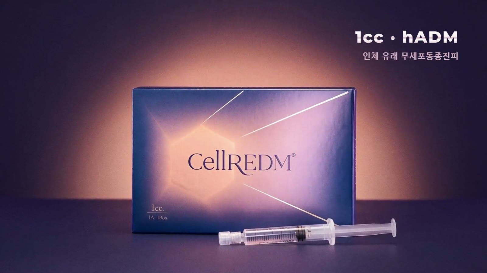
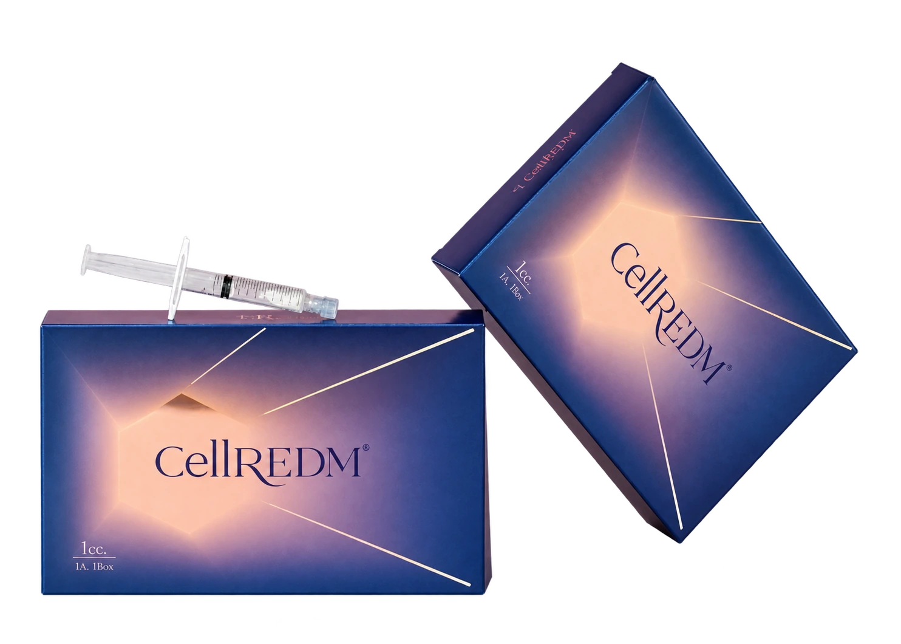
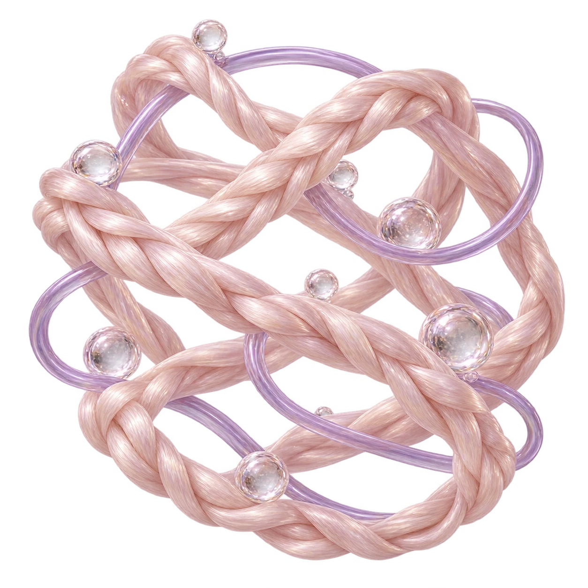

피부 구조를 이루는 진피 소재
셀르디엠은 인체 유래 무세포동종진피를 활용합니다. 피부 조직을 지지하는 세포외기질에 주목한 소재라는 점이 특징입니다.
- 소재
- 인체 유래 무세포동종진피
- 확인할 점
- 피부결·잔주름·탄력 고민과 함께 피부 두께, 민감도, 기존 시술 이력을 확인해요.

BEAUTY BLOSSOM · SKIN QUALITY
01 / ABOUT CELLREDM
Skin, in
structure.
셀르디엠(CellREDM)은 인체 유래 무세포동종진피(hADM)를 활용한 한스바이오메드의 제품입니다.
피부를 지지하는 세포외기질, ECM에 주목해 피부결과 탄력 고민을 살펴봅니다. 현재 피부 상태와 원하는 변화를 함께 확인하고 나에게 맞는 시술 방향을 상담합니다.

인체 유래 진피에서 미세입자까지. 이름 속 hADM이 어떤 소재인지 알아보세요.
진피는 피부를 지지하는 콜라겐 등의 구조를 포함합니다. 셀르디엠은 인체 유래 진피를 가공한 소재를 활용합니다.
hADM은 무세포동종진피를 뜻합니다. 세포 성분을 제거하는 가공을 통해 콜라겐 등을 포함한 진피의 지지 구조를 활용하는 소재입니다.
제조사는 hADM을 75μm 미세입자 형태로 가공했다고 안내합니다. 의료진은 피부 두께와 적용 부위를 살펴 사용량과 시술 방법을 정합니다.
02 / THE FOUNDATION
세포외기질은 세포 사이에서
피부 조직을 지지하는 구조입니다.

Collagen
콜라겐은 피부 구조를 이루는 주요 단백질입니다. 피부를 받쳐주는 지지대의 역할을 생각하면 이해하기 쉽습니다.
Elastin
엘라스틴은 조직이 늘어났다가 돌아오는 성질에 관여합니다. 콜라겐과 함께 피부의 물리적 특성을 이루는 요소입니다.
Ground substance
기질은 세포와 섬유 사이를 채우며 수분 유지와 물질 이동 등에 관여합니다. 여러 구성 요소가 함께 피부 조직의 환경을 만듭니다.
THE MATERIAL
제조사가 안내하는 미세입자 크기.
hADM을 미세입자 형태로 가공한 제품입니다. 피부 두께와 시술 부위 등을 확인해 적용 방법을 세심하게 결정합니다.
입자 크기는 제품의 소재 특성을 설명하는 수치입니다.
같은 피부 고민에도 선택 기준은 달라질 수 있어요. 소재를 눌러 특징과 확인할 점을 살펴보세요.
Different materials. Personal choices.
여러 성분을 함께 담은 제품도 있습니다. 내 피부의 목표와 제품별 특성을 함께 살펴 적합한 방향을 정합니다.
셀르디엠은 인체 유래 무세포동종진피를 활용합니다. 피부 조직을 지지하는 세포외기질에 주목한 소재라는 점이 특징입니다.
PN은 폴리뉴클레오티드를 뜻합니다. 리쥬란은 연어 유래 PN을 활용한 제품으로, 제품 종류에 따라 혼합 성분과 사용 목적을 함께 확인합니다.
히알루론산은 물과 결합하는 성질을 가진 성분입니다. HA 기반 스킨부스터는 수분 관리에 주목하며, 제품마다 농도와 가공 방식, 혼합 성분이 다를 수 있습니다.
03 / YOUR SKIN, YOUR PLAN
피부가 보내는 작은 변화부터,
지금 필요한 관리를 함께 찾습니다.
피부 표면의 거친 느낌과 건조함, 모공이 도드라져 보이는 원인을 함께 살펴봅니다.
표정, 피부 두께, 건조 정도를 구분해 현재 고민에 맞는 접근을 상담합니다.
피부 탄력과 볼륨, 처짐의 양상을 확인해 적합한 시술과 관리 방향을 안내합니다.
세안 후 당김이 있는지, 화장이 들뜨는지, 모공이 도드라지는 부위가 어디인지 알려주세요. 건조함과 피부 표면의 변화가 함께 있는지 살펴봅니다.
사용 중인 각질 관리 제품과 보습 습관, 최근 피부가 예민해졌던 경험을 알려주시면 관리 방향을 정하는 데 도움이 됩니다.
표정을 지을 때와 편안히 쉬고 있을 때 주름이 어떻게 달라지는지 살펴봅니다. 피부 두께와 건조 정도도 함께 확인합니다.
눈가나 입가 등 신경 쓰이는 위치와 최근 받은 보톡스·필러 등의 시술 이력을 확인해 적합한 방법을 안내합니다.
피부가 얇게 느껴지는지, 볼륨이 줄었는지, 윤곽의 처짐이 함께 있는지 확인합니다. 서로 다른 변화가 겹쳐 있을 수도 있어요.
피부결 관리가 우선인지, 볼륨이나 윤곽에 대한 고민이 더 큰지 말씀해 주세요. 피부 상태와 목표에 따라 다른 시술을 함께 상담할 수 있습니다.
시술의 적합성과 기대할 수 있는 변화는 개인의 피부 상태에 따라 다릅니다.
A PERSONAL APPROACH TO SKIN
Your skin.
Your balance.
피부 두께와 민감도, 기존 시술 이력까지.
상담을 통해 나에게 맞는 계획을 함께 세웁니다.
04 / CONSULTATION & CARE
현재 상태를 확인하고,
회복 경과에 맞춰 안내합니다.
피부 고민과 건강 상태, 알레르기 및 기존 시술 이력을 확인합니다.
적합한 부위와 사용량, 시술 방법 및 일정을 상담 후 정합니다.
시술 후 피부 반응을 확인하고 관리 방법과 다음 일정을 안내합니다.
복용 중인 약·영양제와 알레르기, 최근 받은 시술을 정리해 주세요. 중요한 일정도 미리 알려주시면 회복 계획을 함께 살펴볼 수 있어요.
시술 부위와 방법, 시술 후 예상되는 피부 반응을 안내받으세요. 진행 중 불편한 점이 있으면 바로 말씀해 주세요.
시술 부위를 강하게 누르거나 문지르지 않고 보습과 자외선 차단을 유지해 주세요. 세안·화장·운동 재개는 안내받은 기준을 따라주세요.
붓기나 멍 등 피부 반응의 변화를 살펴주세요. 불편감이 심해지거나 피부색 등 평소와 다른 변화가 있으면 의료진에게 바로 알려주세요.
A LITTLE EXTRA CARE
상담 전에는 복용 중인 약과 영양제, 알레르기, 임신·수유 여부를 알려주세요. 최근 받은 필러나 다른 시술 이력도 함께 확인합니다.
시술 후에는 붓기, 붉어짐, 멍, 통증이나 주사 부위의 작은 도드라짐이 일시적으로 나타날 수 있습니다. 부위를 강하게 문지르지 않고 보습과 자외선 차단을 유지해 주세요.
드물게 감염이나 알레르기 반응 등이 생길 수 있습니다. 불편감이 심해지거나 피부색 등 평소와 다른 변화가 나타나면 의료진에게 바로 알려주세요.
05 / QUESTIONS & ANSWERS
셀르디엠(CellREDM)은 한스바이오메드가 개발한 인체 유래 무세포동종진피(hADM) 기반 제품입니다. 피부를 지지하는 세포외기질(ECM)에 주목한 접근으로, 피부 상태와 고민에 따라 의료진과 시술 적합성을 상담할 수 있습니다.
ECM은 세포 사이를 채우고 피부 조직을 지지하는 세포외기질을 뜻합니다. hADM은 인체 진피에서 세포 성분을 제거하는 가공 과정을 거친 무세포동종진피입니다. 두 용어는 같은 뜻이 아니며, 셀르디엠은 hADM을 활용한 제품입니다.
제조사가 안내하는 미세입자 크기입니다. 제품의 소재 특성을 설명하는 수치로, 실제 시술 방법과 적용 부위는 피부 두께와 상태 등을 확인해 결정합니다. 통증이나 효과의 정도는 개인에 따라 다를 수 있습니다.
피부결이 거칠어 보이거나 잔주름과 탄력 저하가 신경 쓰일 때 상담할 수 있습니다. 피부 두께, 민감도, 건조함과 기존 시술 이력을 함께 살펴 현재 상태에 맞는 방법을 안내합니다.
제품마다 원료와 피부에 접근하는 방식이 다릅니다. 셀르디엠은 hADM 기반 소재를 활용한다는 점이 특징입니다. 제품 이름만으로 선택하기보다 개선하고 싶은 고민과 피부 상태를 바탕으로 적합한 제품을 상담합니다.
시술 부위, 피부 상태, 사용량과 회복 경과를 함께 고려해 정합니다. 상담에서 목표를 먼저 확인하고, 시술 후 피부 반응을 살펴 다음 일정과 관리 계획을 안내합니다.
회복 양상에는 개인차가 있습니다. 주사 부위에 일시적으로 붓기, 붉어짐, 멍, 통증이나 작은 도드라짐이 나타날 수 있으므로 중요한 일정이 있다면 상담 시 미리 말씀해 주세요.
복용 중인 약과 영양제, 알레르기, 피부 질환, 임신·수유 여부를 알려주세요. 최근 같은 부위에 받은 필러나 다른 시술, 반복되는 피부 염증도 함께 확인하면 더 세심하게 계획할 수 있습니다.
시술 부위를 강하게 문지르거나 누르지 않고, 보습과 자외선 차단을 유지해 주세요. 음주, 사우나, 격한 운동 등의 주의 기간은 의료진의 개별 안내를 따라주세요. 드물게 감염이나 알레르기 반응 등이 생길 수 있어 불편감이 심해지거나 평소와 다른 변화가 있으면 의료진에게 바로 알려주세요.
나에게 맞는 이벤트를 펼쳐보세요.

A moment for yourself.
홍대·합정 뷰티블라썸의원
피부 고민과 지금까지 받은 시술을 함께 알려주세요.
한스바이오메드 셀르디엠 출시 자료(2025.09.29), 제품 및 소재 설명 참고.
제조사 자료 보기 ↗PN 제품 자료 · 파마리서치HA 소재 자료 · Galderma